Hastrid Booking · 商家使用手册
预约管理全流程
上手指南
从注册开店到每天接单，网页版后台 + 微信小程序，一本手册讲清楚。
🖥️ 网页版后台
📱 哈瓜小约小程序
💬 短信+微信提醒
hastridbooking.com
面向美国华人小商家 · 美甲/美发/美睫/按摩
开始之前
这是什么？
Hastrid Booking 是一套给小店用的预约管理工具，让你告别微信来回问时间、手写小本子记客人。它由两部分组成：
🖥️
网页版后台（你用）手机或电脑打开网址就能用，管日历、客人、员工、收款。你日常在这里接单。📱
专属预约链接 / 小程序（客人用）把链接发给客人，或让客人在微信小程序「哈瓜小约」上自己选时间下单。
一句话流程：你在后台把店铺、服务、员工、营业时间设好 → 拿到专属预约链接 → 发给客人 → 客人自己下单 → 你在日历上看到预约，系统自动发短信确认和提前提醒。
目本手册包含
第一部分网页版后台：从零把店开起来（注册→设置→服务→员工→营业时间）
第二部分日常使用：日历接单、客户管理、群发短信、数据分析
第三部分客人怎么预约：专属链接 + 短信确认
第四部分微信小程序「哈瓜小约」
第五部分收费说明 + 常见问题
第一部分
网页版后台：把店开起来
第一次用，跟着下面 7 步走一遍，大概 10 分钟就能把店铺配好、拿到你的专属预约链接。
1注册账号
手机或电脑浏览器打开 hastridbooking.com，点「注册」。填店名、邮箱、手机号、设置密码。注册后自动获得 30 天免费试用。
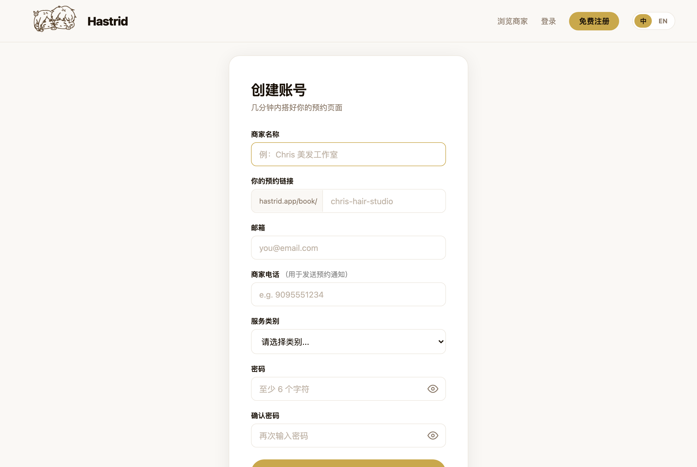
注册页：填店铺名、邮箱、手机号、密码
2登录后台
用刚才的邮箱和密码登录。忘记密码可以用手机号找回（会收到短信验证码）。
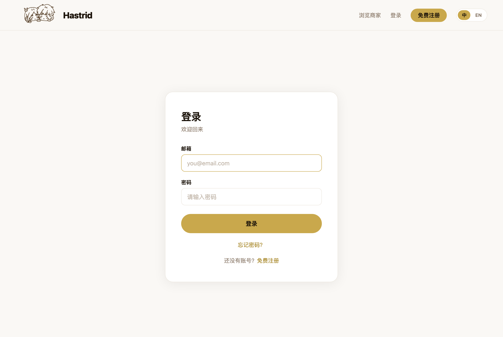
登录页：右上角可切换中 / EN 双语
3完善店铺信息
进「设置」，填店铺名、地址、简介、分类，上传头像和封面图。这些会显示在客人看到的预约页上，装修好看一点，客人更信任。
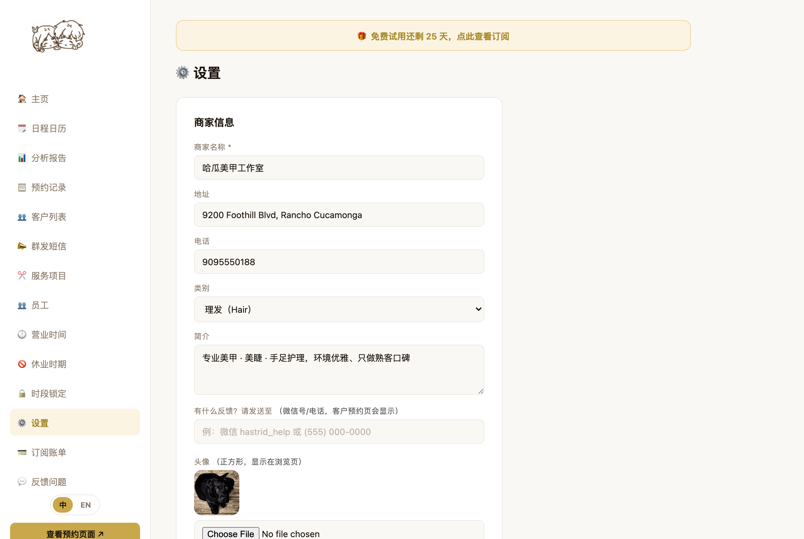
设置页：店铺信息 + 头像/封面上传
4添加服务项目
进「服务项目」，把你提供的项目一个个加进去：名字、时长、价格。时长决定预约块在日历上占多久；价格用于数据分析统计营业额（不填价则显示「价格面议」）。每个服务还能选一个颜色，方便在日历上一眼区分。
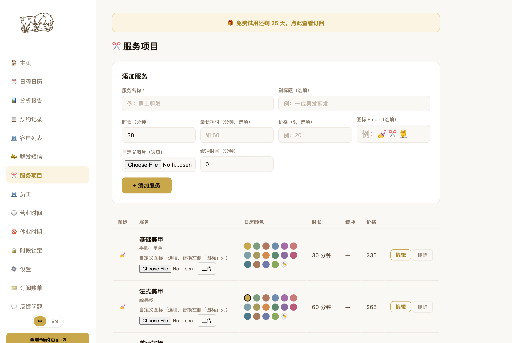
服务项目：可设时长、价格、颜色
5添加员工（可选）
如果店里有多个技师/员工，在「员工」里把他们加进来。之后预约可以指定到某个员工，日历也能按员工筛选查看。只有你一个人做的话，这步可以跳过。
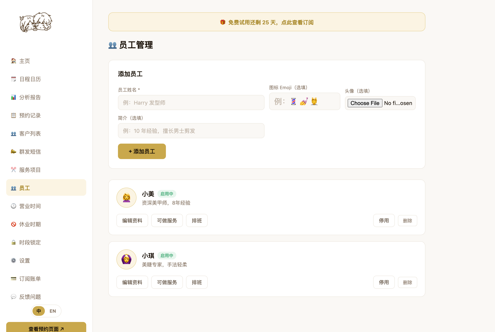
员工管理：每个员工可单独排班
6设置营业时间
进「营业时间」，设定每天几点到几点营业、哪天休息。客人在预约页只能选到你营业时间内的空档，避免约到打烊后。另外「休业时期」可以标假期/临时休息，那几天客人约不了。
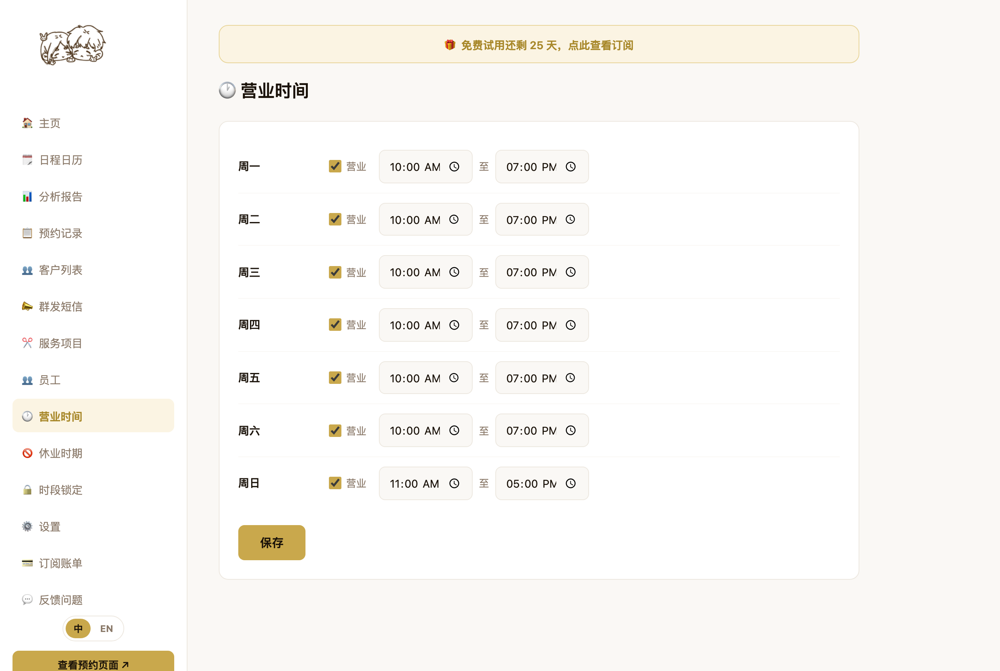
营业时间：逐天设置，控制客人可约的范围
7拿到你的专属预约链接
以上设好后，后台左下角有「查看预约页面 ↗」，这就是你的专属预约页。把这个链接：
- 发到朋友圈 / 微信群 / 个人签名
- 做成二维码贴在店里
- 放进你的小红书 / Instagram 主页
客人点开就能自己选服务、选时间、下单，不用再私信问你有没有空。
设置完成！ 到这里你的店就正式「上线」了。接下来看第二部分，学怎么用日历每天接单。
🏠后台主页长什么样
登录后第一眼看到的是主页：今天的预约、本周数据、经营小结一目了然。左侧是所有功能的导航。
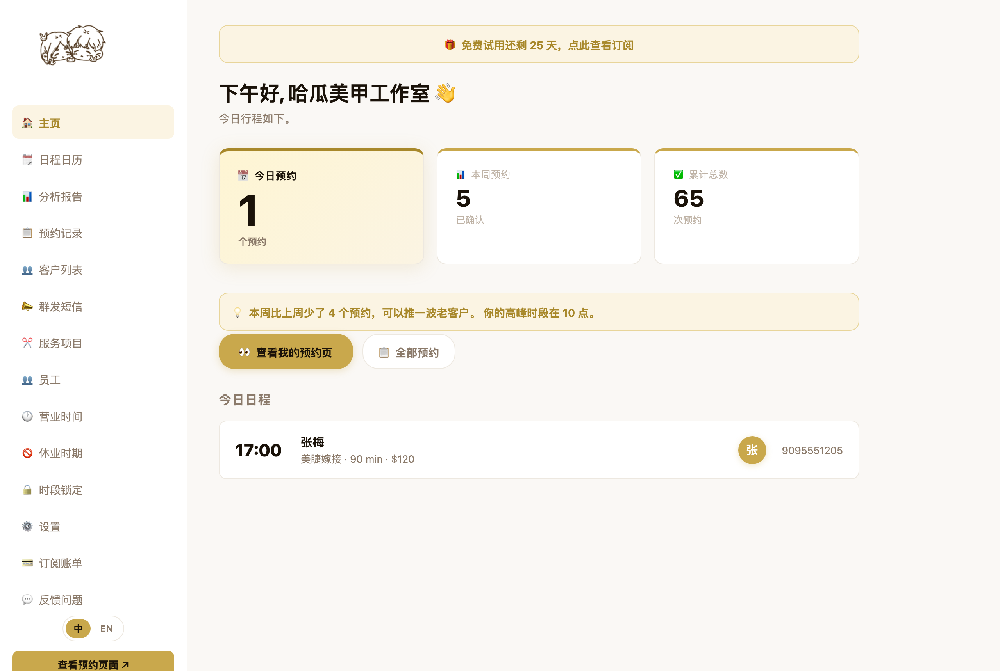
后台主页：今日预约 + 本周概览
第二部分
日常使用：日历接单
日历是你每天用得最多的地方。看预约、加预约、改期、改备注、锁时段，都在这里。
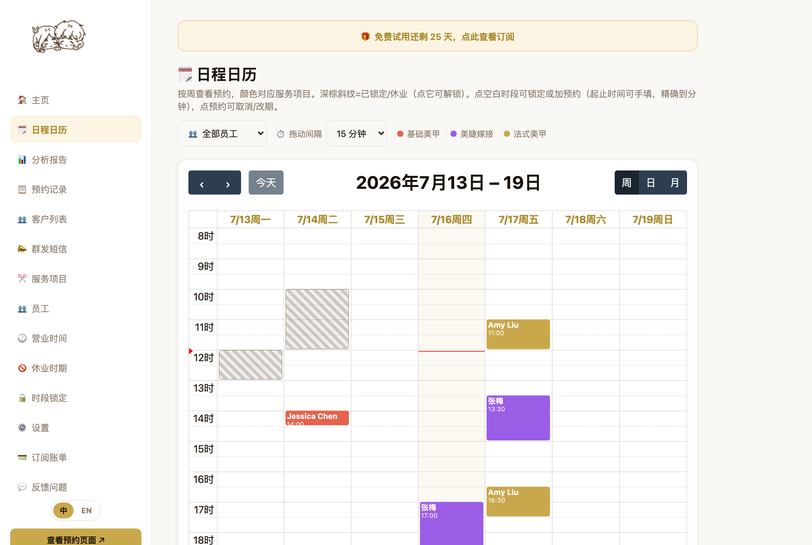
日历页：按周/日/月查看，颜色对应不同服务
日历上能做什么
- 看预约：每个预约块显示客人名字（第一行）和时间。不同服务用不同颜色。
- 切换视图：右上角切「日 / 周 / 月」，系统会记住你上次看的，下次打开还是那个。
- 按员工筛选：左上下拉选某个员工，只看他的预约。
- 拖动改时间：按住预约块上下拖，就能改到别的时间。旁边「拖动间隔」可设 5/10/15/30 分钟一格。
➕手动加预约
客人打电话或当面来约，你可以自己加：点日历上任意空白格 → 选「加预约」→ 选时间、服务、员工，填客人姓名和手机号 → 确认添加。
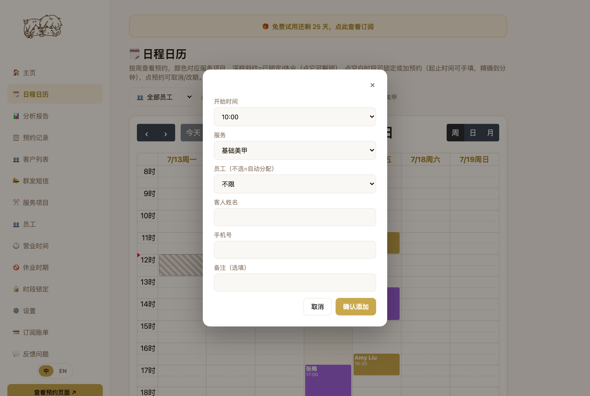
加预约弹层：时间只显示整点，选服务和员工
省事技巧：在「客人姓名」栏直接打字，会自动搜出你已有的客人（带电话），点一下名字和电话就都填好了，不用重新输。
点已有的预约，能做这些
- 查看客户档案：点客人名字直接跳到他的档案
- 改预约：改时间、改服务、改员工都行，不用取消重约
- 改备注：给这次预约加内部备注（只有你能看）
- 取消预约：取消后系统自动发短信通知客人
👥客户管理
「客户列表」里是你所有的客人。顶部有搜索框，输名字或电话都能快速找到。点任意客人进他的档案。
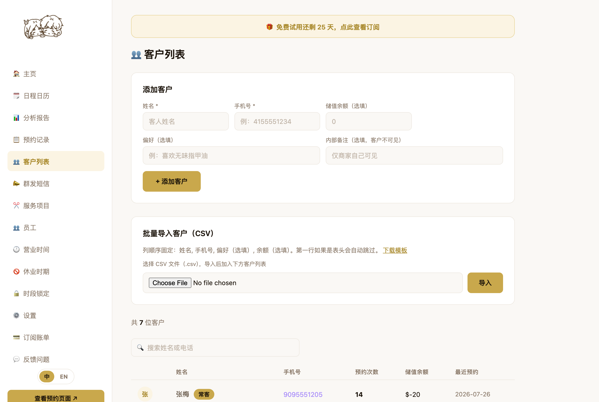
客户列表：顶部可搜索姓名/电话
客户档案能记什么
📝 客人可见备注客人自己也能看到，比如偏好
🔒 我的私密备注只有你能看，客人看不到
💰 储值余额记录充值/核销，做会员卡
📷 服务照片档案存发型/美甲款式，下次参考
🏷️ 曾用名客人换过的名字自动收集，不怕认错
📅 到店记录历次预约一目了然
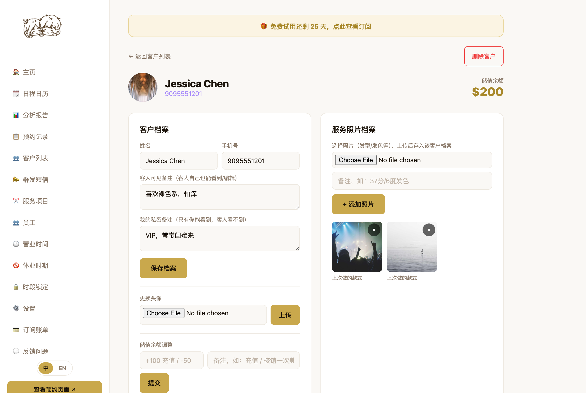
客户档案：备注、储值、照片、到店记录
📣群发短信
「群发短信」可以给选中的客人一次性发消息，比如做活动、通知放假、召回老客。勾选客人 → 写内容 → 发送。
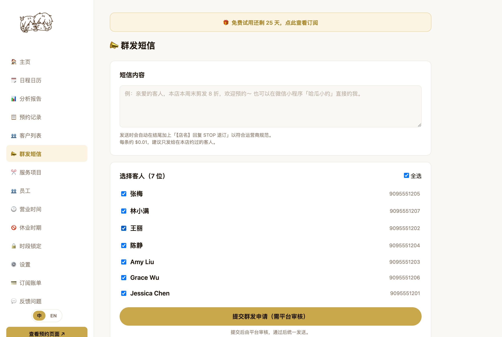
群发短信：选客人 + 写内容群发
📊数据分析
「分析报告」自动统计你的营业额、预约量、热门服务、高峰时段。不用自己算，一眼看清生意好不好、什么时候最忙。
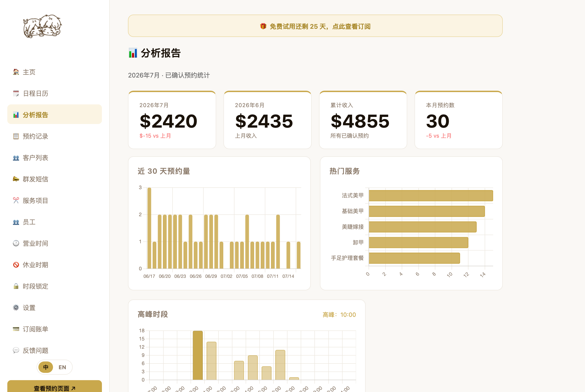
数据分析：营业额、预约趋势、热门服务
第三部分
客人怎么预约
客人打开你的专属链接，整个下单过程不用你插手。
客人的操作（3 步）
- 选服务：打开链接看到你的所有服务和价格，点想要的
- 选时间：日历上只显示你还空着的时间段，选一个
- 填手机号验证：填姓名手机号，收一条短信验证码填进去，确认预约
为什么要短信验证：防止乱填假号码放你鸽子。验证过的号码才能约，也方便后面发提醒。
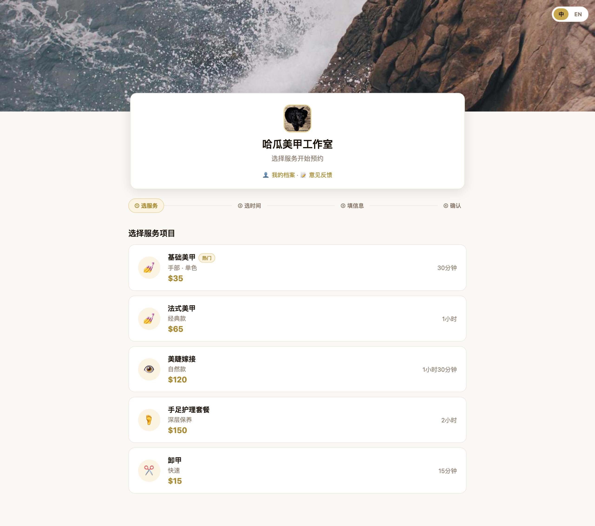
客人看到的预约页：选服务 → 选时间 → 填手机验证
💬自动短信：确认 + 提醒
客人约好后，系统全自动发短信，你什么都不用做：
✅
预约成功确认下单立刻收到，含服务、时间、地址、取消链接⏰
提前一天提醒到店前约 24 小时自动提醒，降低放鸽子📲
微信提醒（小程序客人）通过小程序约的，临近还会收到微信服务通知
短信是英文的：发到美国号码送达更稳，中英文客人都看得懂时间和验证码数字。
客人自己也能取消
确认短信里带一个取消链接，客人点开就能自己取消，取消后你的日历自动更新、你也会收到通知。省得来回沟通。
第四部分
微信小程序「哈瓜小约」
除了网页链接，客人也能在微信里搜「哈瓜小约」小程序找到你的店预约，对习惯用微信的客人更方便。
小程序能做什么
- 客人端：在「发现好店」里找到你的店 → 选服务时间下单 → 在「我的预约」查看/取消，还能收到微信提醒
- 商家端：小程序右上角「商家登录」，用同一个账号登录，也能在手机小程序里管日历、客户、加预约（功能和网页版基本一致）
数据是打通的：不管客人在网页链接约、还是小程序约，都会出现在你同一个后台日历和客户列表里，不会漏。
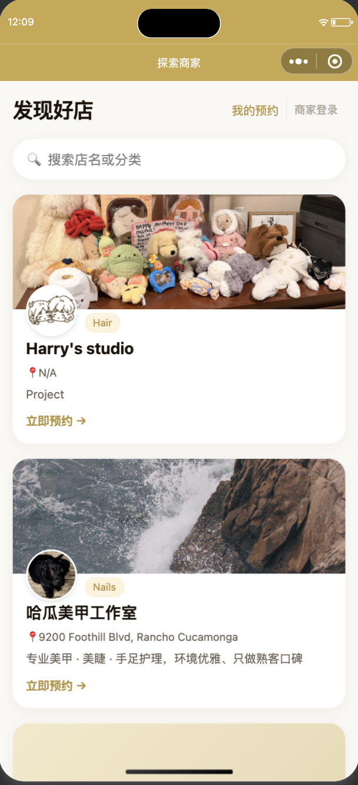
客人端：发现好店，搜索并选择你的店
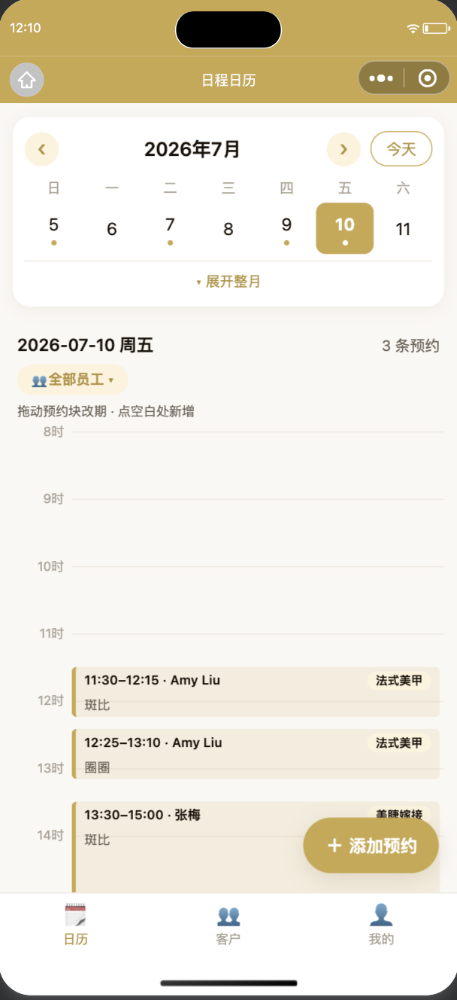
商家端：手机上管理日历与预约
🔗把你的店直接分享给客人
不用让客人自己在首页一家家搜。在小程序里打开你自己的店铺页，点右上角「···」，就能把你的店一键分享出去：
- 发送给朋友：把你的店铺卡片直接发到微信聊天，发给某个客人或客户群
- 分享到朋友圈：一键发圈，谁看到都能点进来直接约
- 复制短链：复制一条短链接，贴到微信群、公众号、电子名片、小红书主页
为什么这样最方便：客人点你分享的卡片或链接，直接进到你的店看服务、选时间、下单，跳过在首页搜索找店这一步，客人少一步操作，成交更顺。
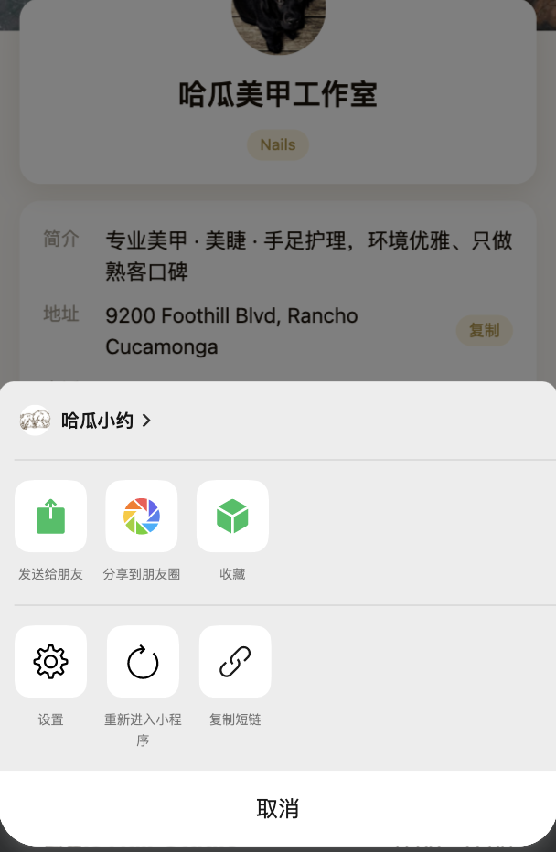
在你的店铺页点右上角「···」→ 发送给朋友 / 分享到朋友圈 / 复制短链
💳收费怎么算
- 30 天免费试用：注册就送，期间所有功能随便用
- $19.99 / 月：试用到期后订阅，随时可取消
- 试用期结束前订阅，功能不中断；不订阅则暂停，客人会看到「暂停接受预约」
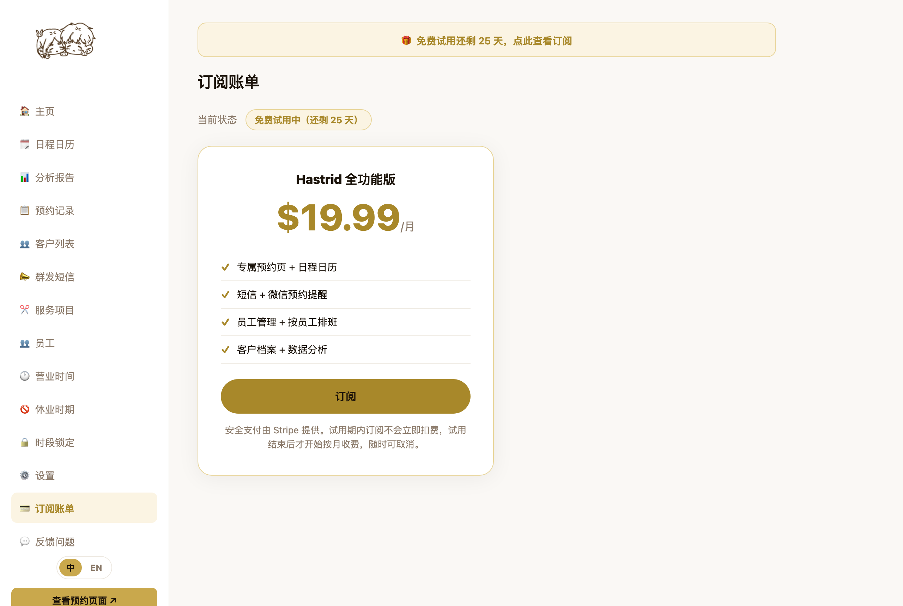
订阅账单页：查看试用剩余天数、订阅
❓常见问题
Q：客人一定要下载 App 吗？
不用。网页链接在任何手机浏览器都能打开，客人点开就能约。习惯微信的客人也可以用「哈瓜小约」小程序，同样免安装。
Q：我可以自己帮客人下单吗？
可以。在日历点空白格就能手动加预约，姓名栏还能搜出老客户自动填。
Q：客人放鸽子怎么办？
系统会自动提前一天发短信提醒，降低放鸽子概率。你也能在客户私密备注里标记「容易爽约」提醒自己。
Q：同一个客人换了名字，会认错吗？
不会。系统按手机号认人，一个手机号一个档案。客人用过的不同名字会自动收进「曾用名」，你点进档案能看到。
Q：忘记密码了？
登录页点「忘记密码」，用手机号收短信验证码重置。
Q：换手机还能用吗？
能。所有数据存在云端，任何设备登录同一个账号看到的都一样。
💬 有任何问题，随时联系 Harry
微信
ii9so_lovz
电话
(626) 559-6294
开通账号、使用问题、功能建议，随时找我，帮你搞定。
Hastrid Booking · 让预约变简单
hastridbooking.com